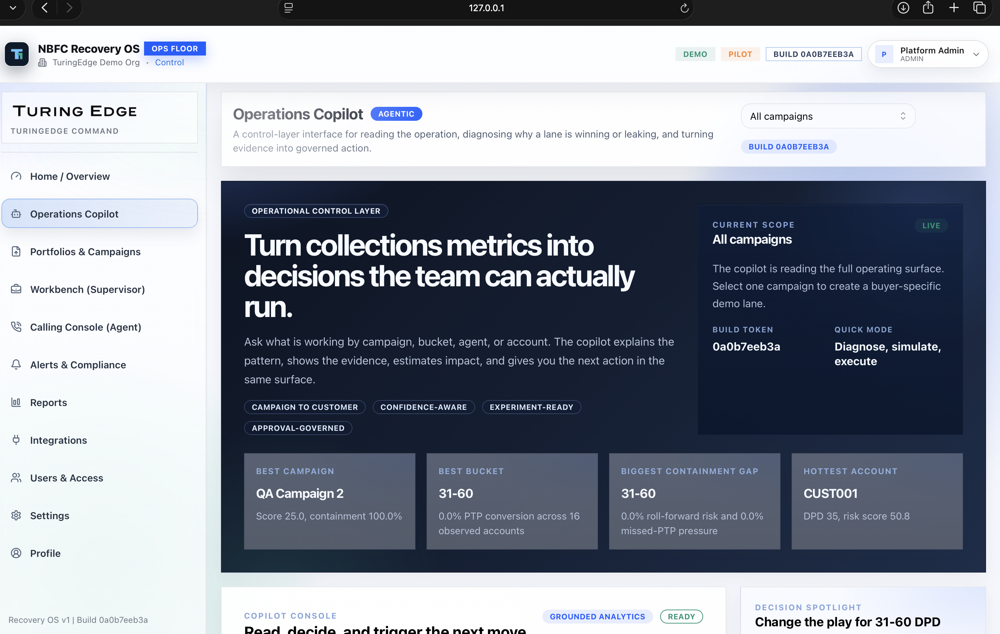
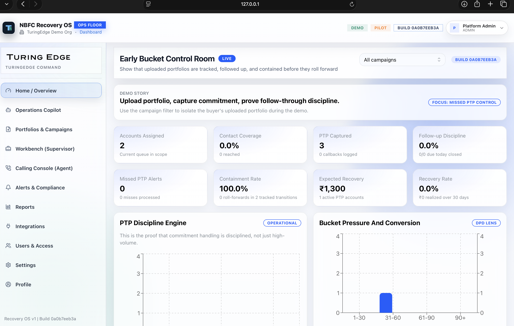
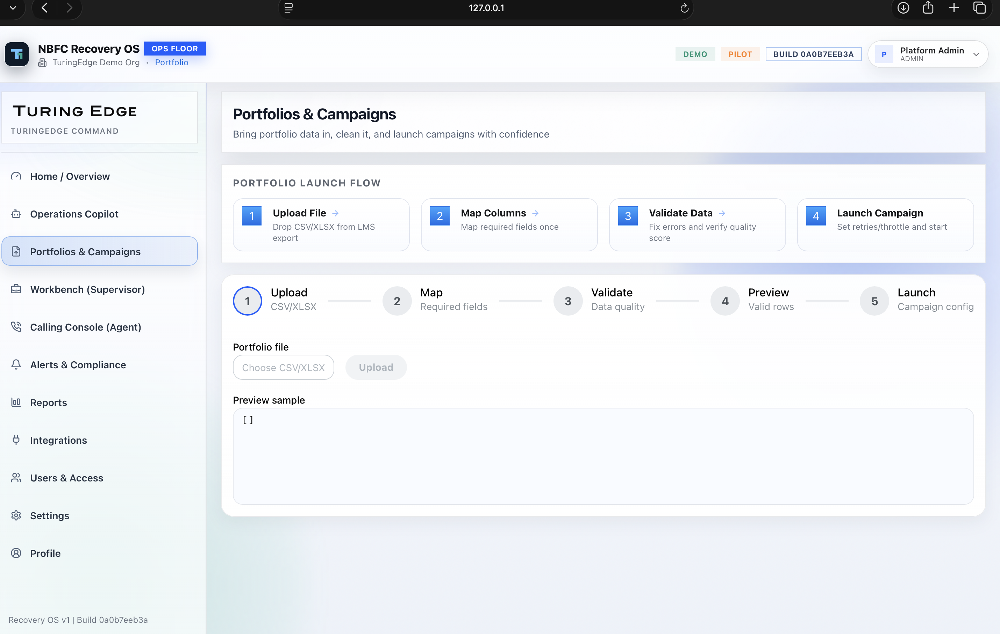
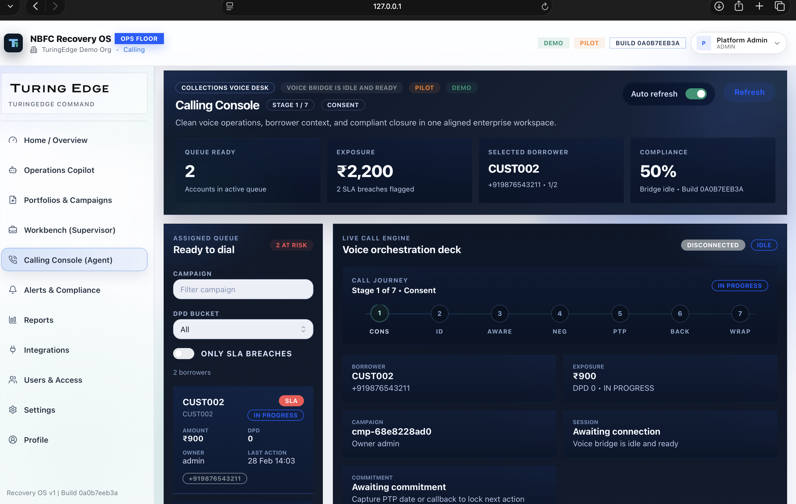
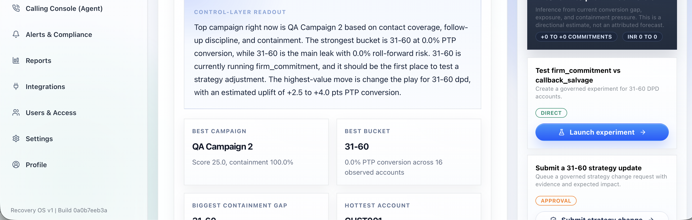
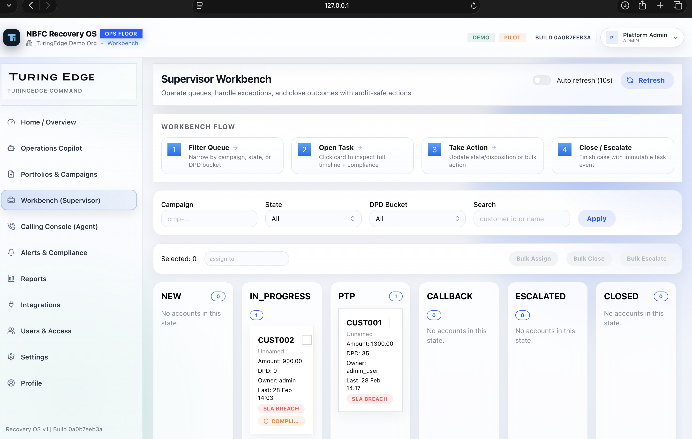
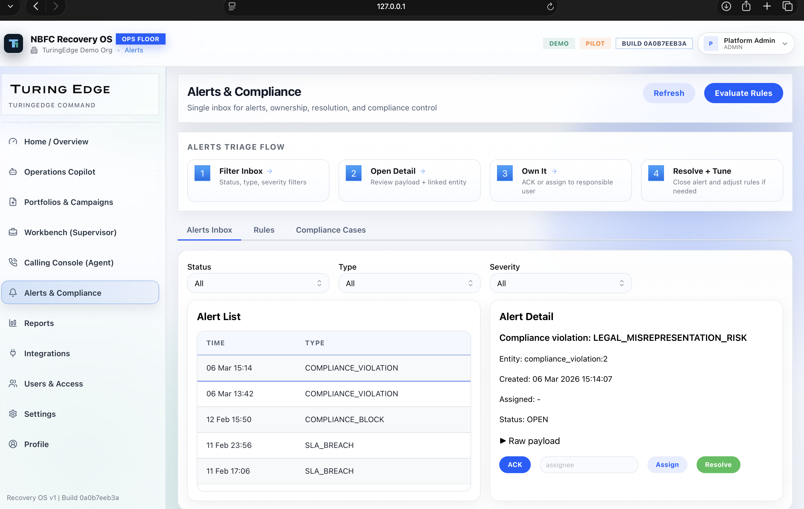
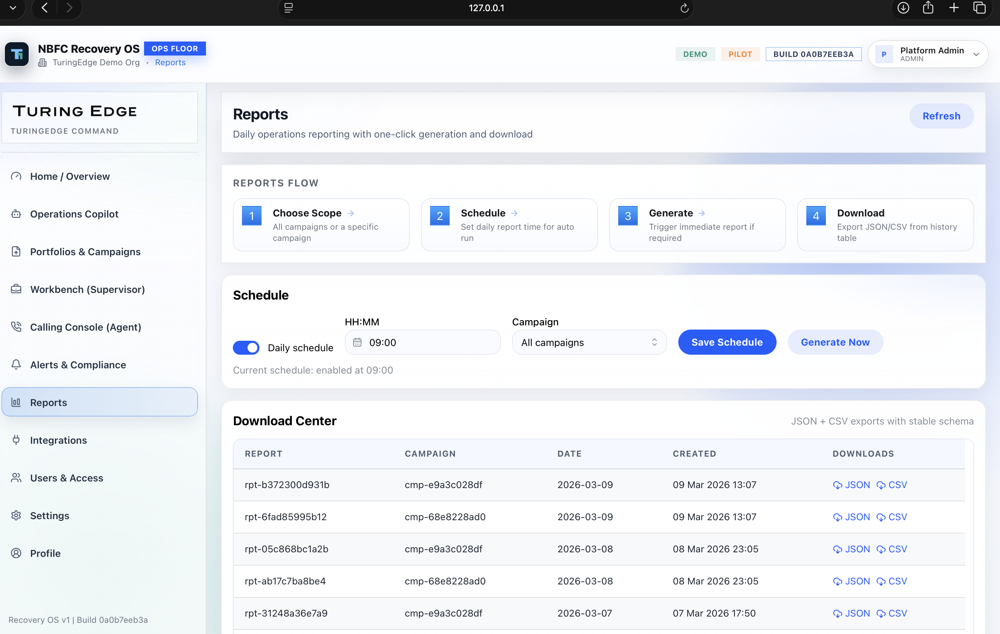
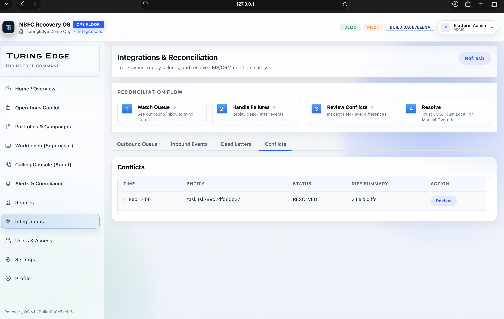

Turn collections metrics into actions.
Start the film on the control layer so the product opens as a decision system, not another dashboard.
TuringEdge Recovery OS gives collections leaders one control layer from portfolio upload to governed action.
Smart Animate to Shot 02 with an ease-out 700ms push so the stage feels cinematic.

Turn live operating metrics into explainable next-best action.

Slide into portfolio launch to prove the workflow starts with real operational intake.
Operationalize the sheet in minutes.
Move from category story into hard proof: the lender spreadsheet becomes a live campaign without a brittle handoff.
A portfolio sheet comes in, fields are mapped, validated, and launched into a live campaign.
Animate the screen block slightly left while the typography settles to imply forward momentum.

Upload, validate, and launch without rebuilding the operating context in another tool.
Capture the promise at the desk.
Tie the agent workflow to the buyer’s control problem: PTPs and callbacks are captured where the conversation happens.
Agents capture commitments directly from the desk, creating a clean trail for follow-through.
Zoom the commitment panel slightly larger than Shot 02 so the commitment moment feels emphasized.


Carry the commitment forward into the supervisory proof layer on Shot 04.
Prove follow-through, not just activity.
This is the supervisory proof layer: discipline, missed-PTP pressure, containment, and recovery all live in one surface.
Supervisors see missed-PTP pressure, roll-forward risk, and recovery potential in one control surface.
Pan the KPI band and then settle into the chart region before moving into the copilot explanation frame.
Show the operation is containing risk after the promise instead of only logging activity.
Explain what is working. Then recommend the move.
Hold longer here. The AI should read like a grounded decision layer with evidence, confidence, and action payloads.
The copilot explains what is working by campaign, bucket, agent, or account, then proposes the next move.
Use a slower Smart Animate between Shot 04 and Shot 05 so the reasoning frame feels deliberate.

Grounded recommendations, not vague AI summaries.
Every recommendation is backed by evidence, confidence, and expected impact.
Close on enterprise readiness so the story lands as a deployable operating system.
Close the loop across the whole operation.
End with enterprise readiness: supervisors, compliance, reporting, integrations, and governance live inside the same product.
Compliance, reporting, and reconciliation stay connected to the same system, so the operation closes the loop.
Use this as the final frame or loop back to Shot 01 with a soft dissolve for an autoplay feel.



